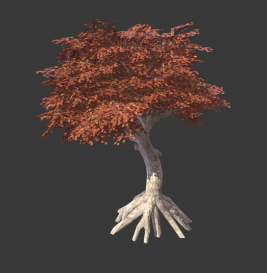

Tạo cây
Đây là một bài hướng dẫn ngắn về cách tạo cây và các loại thực vật khác từ đầu.
Mục tiêu không phải là tập trung vào kỹ thuật dựng hình (đã có rất nhiều bài hướng dẫn về điều đó), mà là cách làm cho chúng trông đẹp trong Godot.

Bắt đầu với một cái cây
Tôi lấy cái cây này từ SketchFab:

https://sketchfab.com/models/ea5e6ed7f9d6445ba69589d503e8cebf
và mở nó trong Blender.
Tô bằng vertex color
Việc đầu tiên bạn có thể muốn làm là dùng vertex color để tô mức độ cây sẽ đung đưa khi có gió. Chỉ cần dùng công cụ tô vertex color của chương trình dựng hình 3D bạn yêu thích và tô như thế này:

Hơi phóng đại một chút, nhưng ý tưởng là màu sắc thể hiện mức độ đung đưa tác động lên từng phần của cây. Thang màu ở đây thể hiện điều đó rõ hơn:

Viết shader tùy chỉnh cho lá
Đây là một ví dụ về shader cho lá:
shader_type spatial;
render_mode depth_prepass_alpha, cull_disabled, world_vertex_coords;
Đây là một spatial shader. Không có culling mặt trước/mặt sau (để lá có thể được nhìn thấy từ cả hai phía), và alpha prepass được dùng để giảm các artifact về độ sâu do dùng độ trong suốt (và lá có đổ bóng). Cuối cùng, với hiệu ứng đung đưa, nên dùng tọa độ world để cây có thể được nhân bản, di chuyển, v.v. mà vẫn hoạt động đồng bộ với các cây khác.
uniform sampler2D texture_albedo : source_color;
uniform vec4 transmission : source_color;
Ở đây, texture được đọc, cùng với một màu transmission, dùng để thêm chút ánh sáng từ phía sau cho lá, mô phỏng hiện tượng tán xạ dưới bề mặt (subsurface scattering).
uniform float sway_speed = 1.0;
uniform float sway_strength = 0.05;
uniform float sway_phase_len = 8.0;
void vertex() {
float strength = COLOR.r * sway_strength;
VERTEX.x += sin(VERTEX.x * sway_phase_len * 1.123 + TIME * sway_speed) * strength;
VERTEX.y += sin(VERTEX.y * sway_phase_len + TIME * sway_speed * 1.12412) * strength;
VERTEX.z += sin(VERTEX.z * sway_phase_len * 0.9123 + TIME * sway_speed * 1.3123) * strength;
}
Đây là đoạn mã tạo chuyển động đung đưa của lá. Nó khá cơ bản (chỉ dùng một sóng sin nhân với thời gian và vị trí theo trục, nhưng hoạt động tốt). Lưu ý rằng cường độ được nhân với màu. Mỗi trục dùng một hệ số nhân nhỏ khác nhau gần 1.0 để các trục không dao động đồng bộ.
Cuối cùng, tất cả những gì còn lại là fragment shader:
void fragment() {
vec4 albedo_tex = texture(texture_albedo, UV);
ALBEDO = albedo_tex.rgb;
ALPHA = albedo_tex.a;
METALLIC = 0.0;
ROUGHNESS = 1.0;
SSS_TRANSMITTANCE_COLOR = transmission.rgba;
}
Và gần như chỉ có vậy.
Shader cho thân cây cũng tương tự, chỉ khác là nó không ghi vào kênh alpha (do đó không cần alpha prepass) và không cần transmission. Cả hai shader đều có thể được cải thiện bằng cách thêm normal mapping, AO và các map khác.
Cải thiện shader
Có rất nhiều tài liệu khác về cách làm điều này mà bạn có thể đọc. Giờ khi đã nắm được những điều cơ bản, một bài nên đọc là chương trong GPU Gems3 về cách Crysis thực hiện việc này (chủ yếu tập trung vào đoạn mã đung đưa, vì nhiều kỹ thuật khác trình bày ở đó đã lỗi thời):
https://developer.nvidia.com/gpugems/GPUGems3/gpugems3_ch16.html